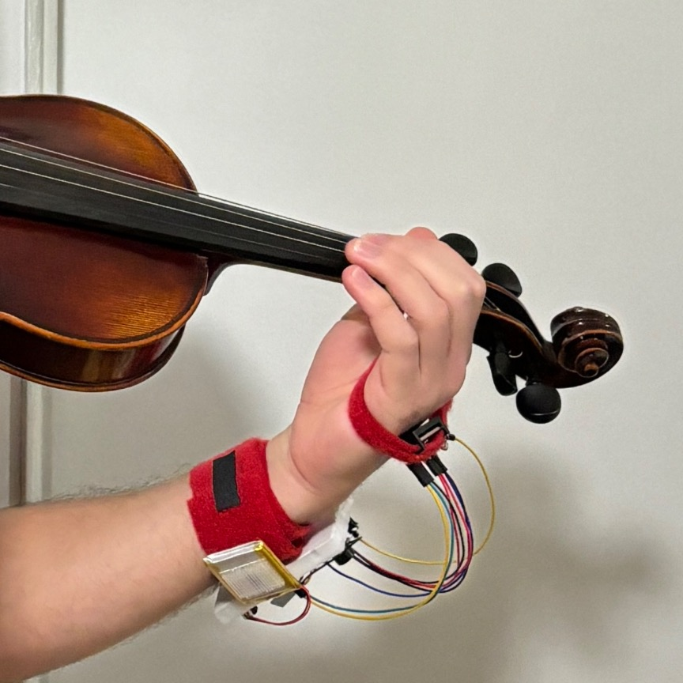
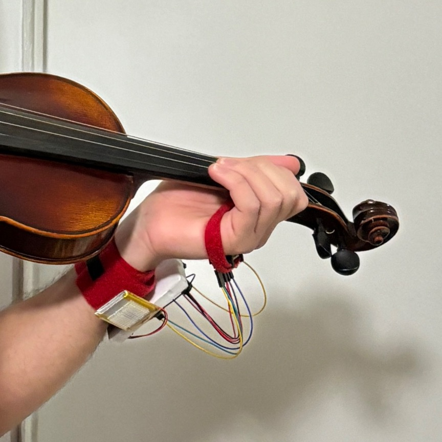
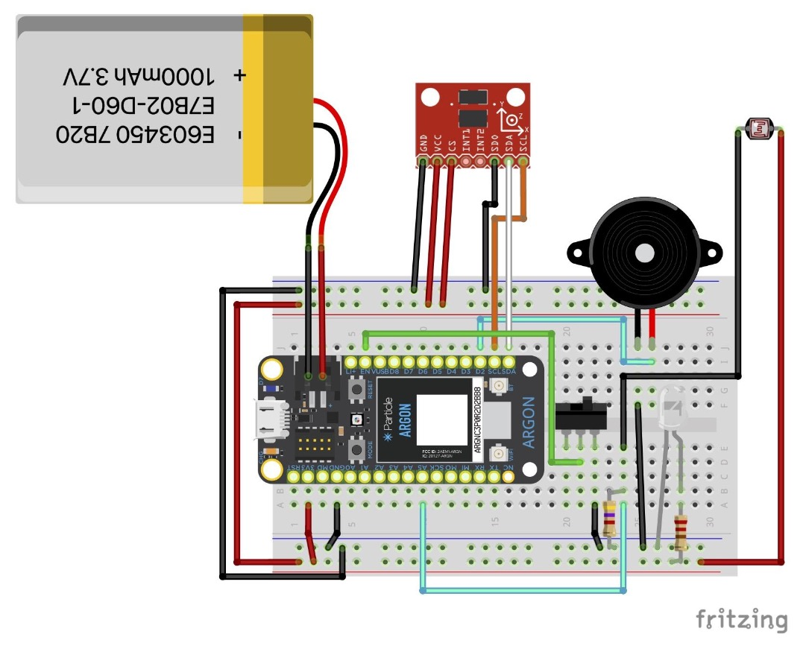
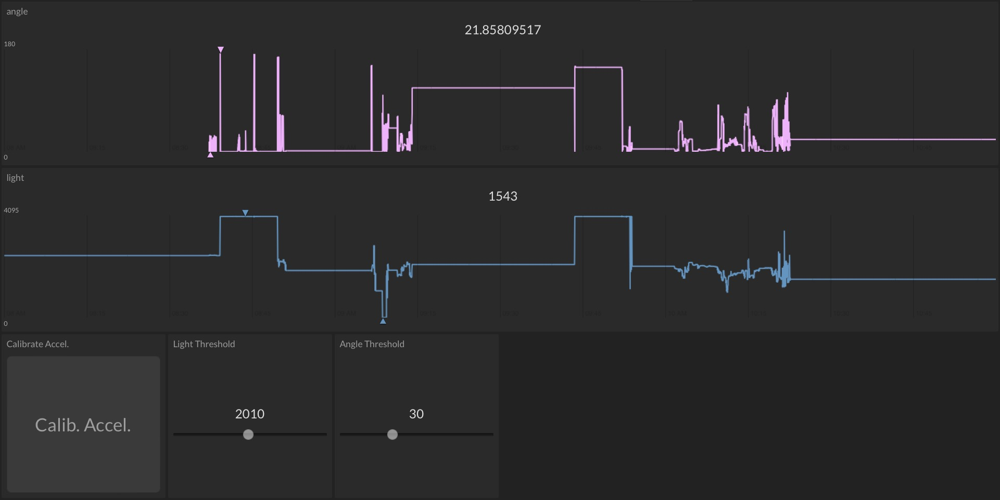
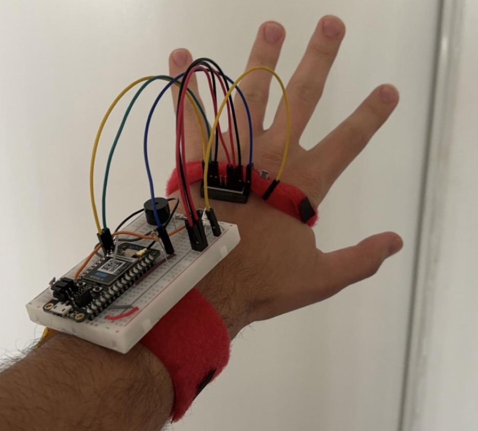

Create a posture aide for violinists and violists that notifies them when their wrists collapse and logs data via the cloud.
| Good Wrist Posture | Bad Wrist Posture |
|---|---|
|  |  |
A class in Fall 2023 required us to come up with a project where a microcontroller (Particle Argon) interfaces with the cloud and physical components.
To make the SPAVV a reality, I had to figure out which components would allow the microcontroller to determine if the musician's wrist is collapsed. I realized that an accelerometer on the back of the left hand could give the wrist's angle relative to gravity, and calibration could set the "zero" angle to the good posture. I also realized that if I put a photoresistor on the back of the left hand facing a bright LED on the left forearm, the resistance will vary if the wrist collapes (the photoresistor will be brought closer to the LED). The need for redundancy arises from the cases where the musician's left hand moves suddenly to hit a note, or if the lighting in the room is extremely bright. The first case might trip the accelerometer method due to the acceleration in the XY-plane. The second case would make the relative light sensor method unreliable. Because the SPAVV will play a tone depending on what method is tripped, the user should be able to set the thresholds for both methods.
Before I could write the code, I had to determine the layout of the components on the breadboard. Eventually, I arrived at the layout below:
The project worked as intended, and I was able to give a live demo during the class. The code has been uploaded to a GitHub repository, along with the documentation deliverables which go into more detail about the SPAVV.
I used Initial State for the cloud connectivity aspect, and created the below dashboard that allows two-way communication with the microcontroller. The "Calib. Accel." button sets the current orientation to the "zero" angle, and the threshold sliders set the point at which the SPAVV will play a tone to notify the musician.
I used Velcro straps to keep the SPAVV on my left arm, and I 3D-printed a piece to hold the accelerometer on my left hand. Because the SPAVV can use a Lithium-Polymer battery, there is no need to connect the microcontroller to a computer for power.
